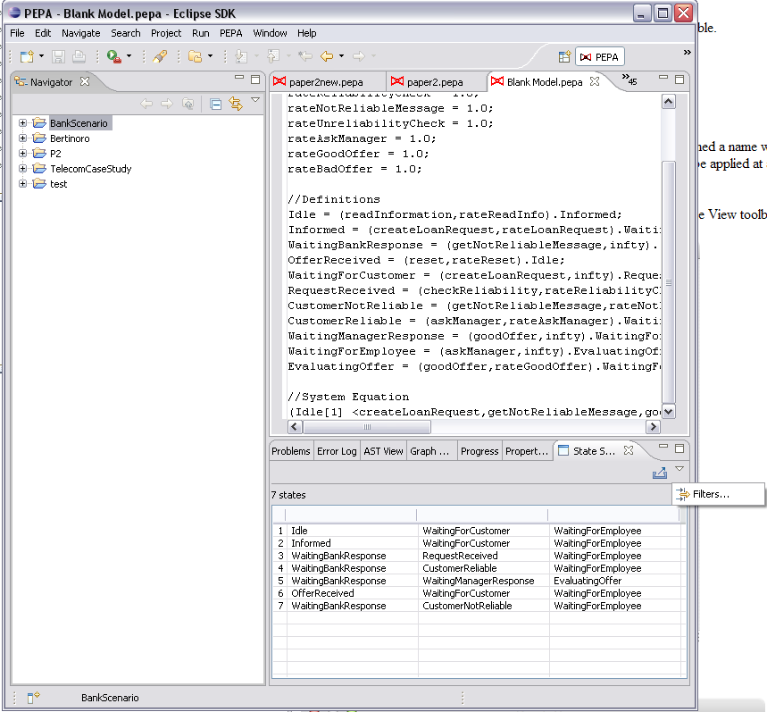
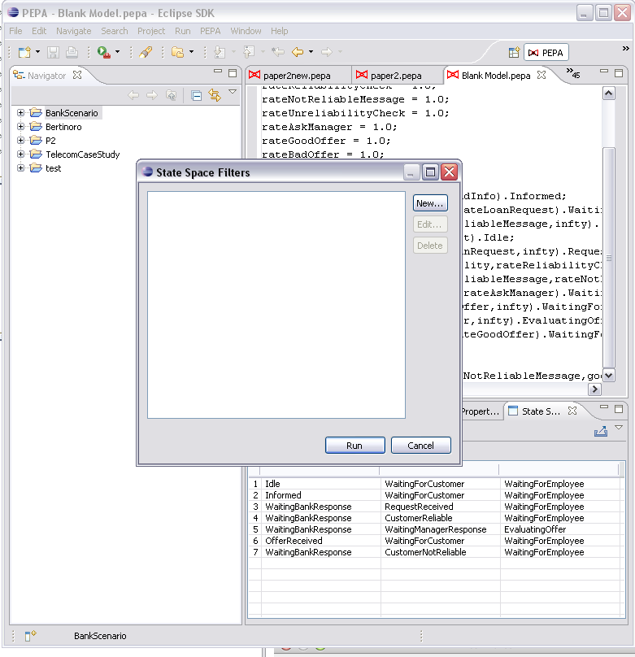
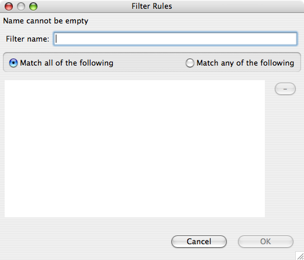
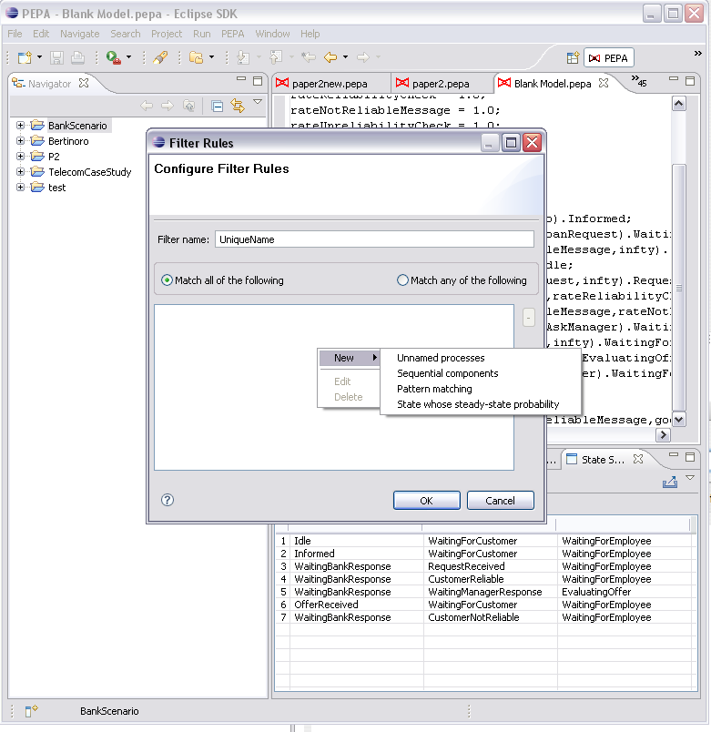

The view provides filters for the state space. Here are the filter rules available.
To open the filter rule editor, click the drop-down arrow in the State Space View toolbar.
The State Space Filters dialog box will show the currently available filter sets for the model.
Click New... to edit a new set of rules. You are required to give it a name. The two radio buttons let you select between matching any or all of the defined rules. The rules are shown in the list box.
To manage the rule list, right click the list box. Click New to show the supported rules.
